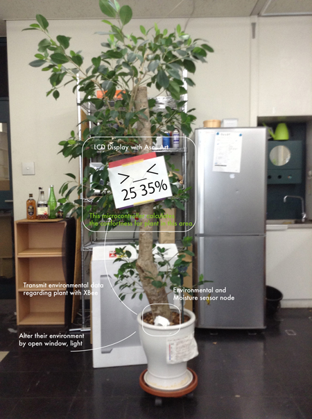

Kousuke Kikuchi
Fab Academy Participant and PhD Candidate
Week 16: Application and Implication
Summary: How do I make own Arduino? How do I check all the sensors, communications and actuators?
I tried to make own Arduino, named ArKou. I designed it with ceramic resonator, so it could drive internal 8MHz or external clock. However, it does not work.
assignment: plan and document a final project that integrates the range of units covered
what will it do?

1. a sensor node which can detect important environment for a plant.
2. Based on the data from the sensor node, LCD displays the emotion of plant by using Ascii Arts.
3. If possible, I want the plant to change the enviroment. e.g. open a window to decrease temperature, blink a light.
who's done what beforehand?
1. Checking arduino-compatible ATMega328
2. Learning wireless communication with XBee
3. Checking how to use all the sensors.
4. Checking how to use LCD
5. Design of the sensor node and actuator. The sensor node requires water-proof compartment and display should be cute.
what materials and components will be required?
Sensor node:
ATMega328 SMD
CO2 Sensor
Temperature and Humidity Sensor
Thermista
Moisture Sensor
Air Pressure Sensor
Piezo Sensor (to detect wind speed)
Photosensor
XBee
Display node:
ATMega328 SMD
LCD Unit
XBee
where will they come from?
MCU, ATMega328 SMD: RS, Japan
MG-8U, CO2 Sensor: ThaiEasyElec, Thailand
DHT22, Temperature and Humidity Sensor: Sengoku, Japan
Grove, Moisture Sensor: Sengoku, Japan
MPL115A2, Air Pressure Sensor: Akitsuki, Japan
Piezo Sensor (to detect wind speed): Sengoku, Japan
Photosensor: Sengoku, Japan
LMB0820, LCD Unit: Sengoku, Japan
XBee: Sengoku, Japan
NXFT15XH103FA2B, Thermista: Akitsuki, Japan
how much will it cost?
ATMega328 SMD: ¥180
CO2 Sensor: $18
Temperature and Humidity Sensor: ¥1280
Moisture Sensor: ¥495
Air Pressure Sensor: ¥500
Piezo Sensor (to detect wind speed): ¥420
Photosensor: ¥1000
LCD Unit: ¥795
XBee: ¥1980
Thermista: ¥40
what parts and systems will be made?
1. Arduino-compatible ATMega328 for verification.
2. XBee Wireless communcation
3. LED module
what processes will be used?
1. Making Arduino Compatible ATMega328
2. Checking how to use the sensors, communication, and actuator based on ATMega328 with Arduino language.
3. Modifying the schematics of the board
4. Based on design of the boards, determining the design.
what tasks need to be completed?
what questions need to be answered?
How to make 20MHz ATMega compatible with Arduino IDE. According to Bas, 20MHz Arduino is possible, but sometimes serial communication might be failed. However, here in Japnan, 16MHz SMD resonator is hardly attained.
what is the schedule?
electronics design for 1 week
3D Design for 4 days
Recording video and editing it for 3 days.
how will it be evaluated?
Part of this project will be joint-research with Prof. Takaguchi, Environmental Engineering in Department of Architecture. Also, I am thinking to upload this project to cloud funding.